Você pediu ajuste em sete mudanças na volta anterior. Cada uma está aqui com as suas palavras, o que mudou, a foto de antes (como você viu) e a de depois. Aprove ou diga o que falta.
Já aprovadas por você, sem cartão: 04-11, 07-29, 07-36, 07-37, 08-14 e 10-19. Na 07-34, a sua marca foi só um «?»: o cartão mostrava a escolha da leitura A, então não há nada a mudar.
O que você pediu e o que mudou
| Mudança | O que mudou |
|---|---|
| 03-15 | A linha «Força do gatilho» saiu inteira: o estilo do jogo decide a força. O desenho do L2 e R2, no alto à esquerda da linha dos nomes dos controles, agora mostra o estilo do jogo: duas linhas, L2 e R2, com o efeito que o estilo escolheu (com o Modo automático ligado) ou o que está escolhido (desligado). É só leitura, não é botão. Com o Modo automático ligado ele fica aceso e o resto esmaece. |
| 05-12 | Saíram os quatro botões (Forte, Média, Fraca, Desligada): a «Força da vibração» é só o trilho com a porcentagem, na mesma altura e no mesmo formato das linhas de baixo (nas vagas sem controle, o travessão, como nas outras). O ícone ao lado do trilho trocou o controle genérico por um DualSense no traço dos ícones de baixo (corpo com as duas empunhaduras, o touchpad largo, o direcional, os quatro botões e os dois analógicos), no mesmo quadrado laranja. A linha ficou menos alta e a imagem do controle ganhou o espaço. |
| 06-26 | O texto comprido saiu da faixa. O título ficou só «Navegação», e a explicação virou a dica da casa sobre a palavra: uma caixa pequena e flutuante que aparece com o mouse sobre o nome (ou com o foco do teclado nele) e some ao sair. A foto mostra o mouse sobre o nome. |
| 07-30 | A «Lovense pelo celular» deixou a lista: a Lovense é uma linha só, igual à do Kyty (nome, selo, versão, descrição, Para, chave, engrenagem e ⋮). A engrenagem da Lovense abre um diálogo com as três formas (Pelo Intiface, Pelo celular e DualSense como brinquedo), cada uma com a sua chave e o seu Para e Quando. «Pelo celular» mora ali. Para abrir o diálogo na página, clique na engrenagem da linha da Lovense. |
| 07-31 | Você marcou para ajustar sem texto. Lido junto com a 07-30: o «DualSense como brinquedo» também saiu da lista e é a terceira forma dentro do diálogo da engrenagem da Lovense. Nasce desligado, com a chave do mesmo tamanho das outras (104 px), o Para e a engrenagem para a configuração completa. Se o que faltava era outra coisa, escreva abaixo. |
| 07-33 | Saiu o aviso laranja «2 com impedimento» da linha da Steam, e o título «Lançadores» segue como está. Os impedimentos se veem no «Configurar» da Steam: o diálogo ganhou a linha «Impedimentos», com «Ver e resolver», que abre o diálogo deles. Os botões da linha seguem com a mesma largura (76 px). |
| 07-35 | A lista tem duas linhas, Kyty e Lovense, no mesmo formato. Saiu a linha «Exemplo da comunidade». O resto se configura clicando na engrenagem; o diálogo da Lovense cabe sem rolar nos três tamanhos (1212 x 809, 1212 x 740 e 1918 x 840). |
03-15 · A força do gatilho sai da aba, e o desenho do L2 e R2 mostra o estilo do jogo
A-INTENSIDADE-DA-VIBRACAO-E-DO-GATILHO-SAI-DO-FIRMWARE-COMO-NO-PS5-01«não eu tava falando do desenho do lado esquerdio no nome dos controles.aquele lá de cima. Essa linha de força do gatilho não existe pro user. o estilo de jogo determina isso.»
O que mudou. A linha «Força do gatilho» saiu inteira: o estilo do jogo decide a força. O desenho do L2 e R2, no alto à esquerda da linha dos nomes dos controles, agora mostra o estilo do jogo: duas linhas, L2 e R2, com o efeito que o estilo escolheu (com o Modo automático ligado) ou o que está escolhido (desligado). É só leitura, não é botão. Com o Modo automático ligado ele fica aceso e o resto esmaece.
Antes
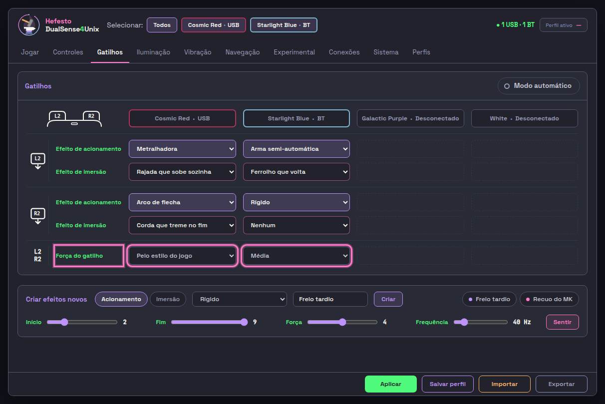
Depois
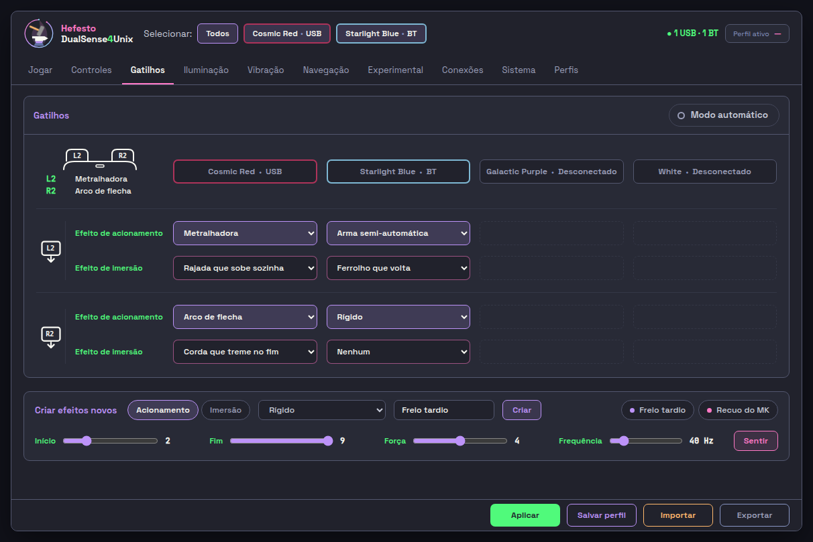
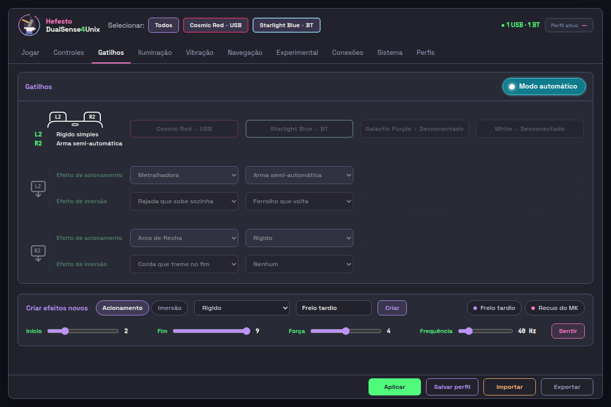
05-12 · A força da vibração vira só o trilho, com o ícone do DualSense certo
A-INTENSIDADE-DA-VIBRACAO-E-DO-GATILHO-SAI-DO-FIRMWARE-COMO-NO-PS5-01«na real remove os botões e força de cibração vira só o slicer. esse controle ali dentro não é o controle do dualsense remove e coloca o certo. o do lado do slicer do força dos controles.»
O que mudou. Saíram os quatro botões (Forte, Média, Fraca, Desligada): a «Força da vibração» é só o trilho com a porcentagem, na mesma altura e no mesmo formato das linhas de baixo (nas vagas sem controle, o travessão, como nas outras). O ícone ao lado do trilho trocou o controle genérico por um DualSense no traço dos ícones de baixo (corpo com as duas empunhaduras, o touchpad largo, o direcional, os quatro botões e os dois analógicos), no mesmo quadrado laranja. A linha ficou menos alta e a imagem do controle ganhou o espaço.
Antes
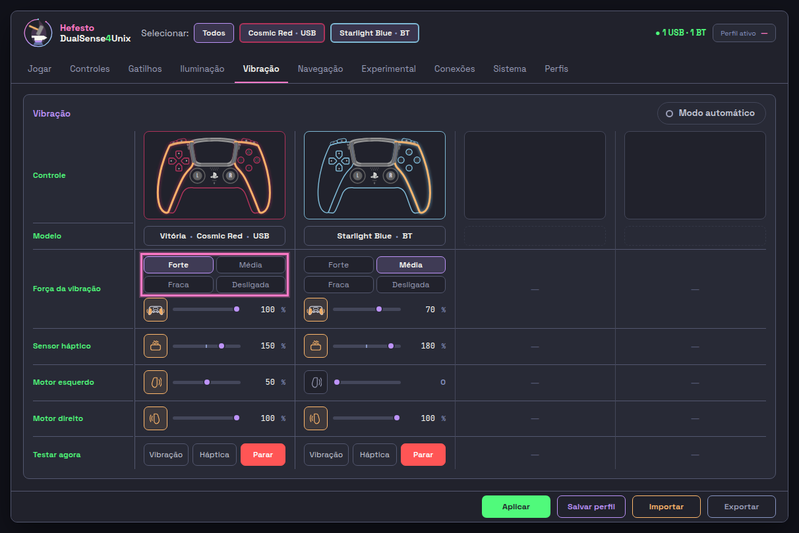
Depois
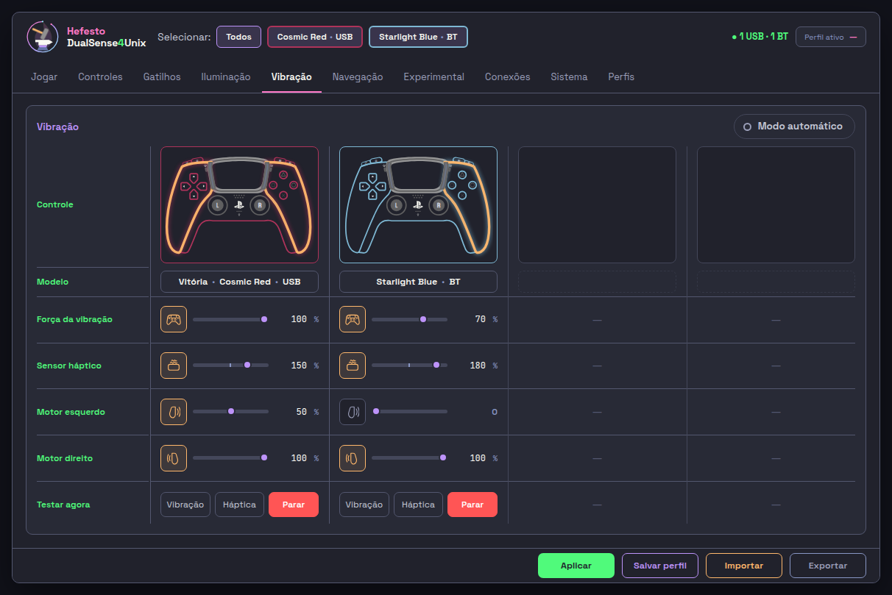
06-26 · A explicação da Navegação vira dica sobre o nome
A-ABA-NAVEGACAO-DO-TODO-01«esse textão é toolti sobre o nome de navegação. reprovado.»
O que mudou. O texto comprido saiu da faixa. O título ficou só «Navegação», e a explicação virou a dica da casa sobre a palavra: uma caixa pequena e flutuante que aparece com o mouse sobre o nome (ou com o foco do teclado nele) e some ao sair. A foto mostra o mouse sobre o nome.
Antes
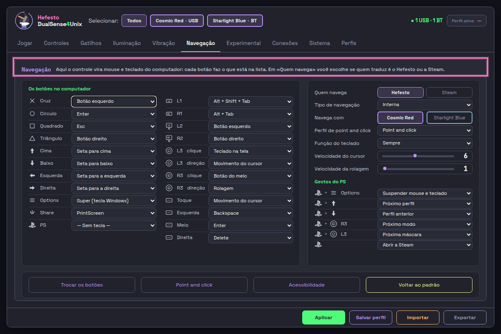
Depois
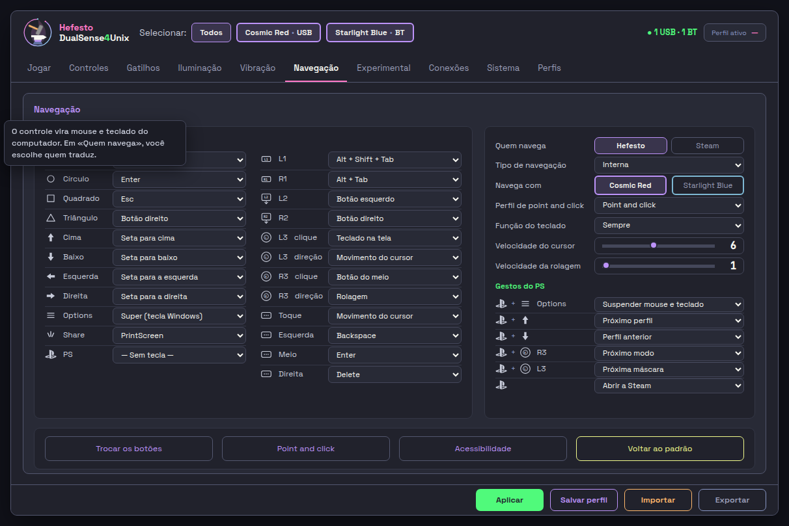
07-30 · A Lovense é uma extensão só: a «Pelo celular» sai da lista e mora no diálogo da engrenagem
A-ABA-EXPERIMENTAL-DO-TODO-01«não. são uma edxtensão só da loven.se»
O que mudou. A «Lovense pelo celular» deixou a lista: a Lovense é uma linha só, igual à do Kyty (nome, selo, versão, descrição, Para, chave, engrenagem e ⋮). A engrenagem da Lovense abre um diálogo com as três formas (Pelo Intiface, Pelo celular e DualSense como brinquedo), cada uma com a sua chave e o seu Para e Quando. «Pelo celular» mora ali. Para abrir o diálogo na página, clique na engrenagem da linha da Lovense.
Antes
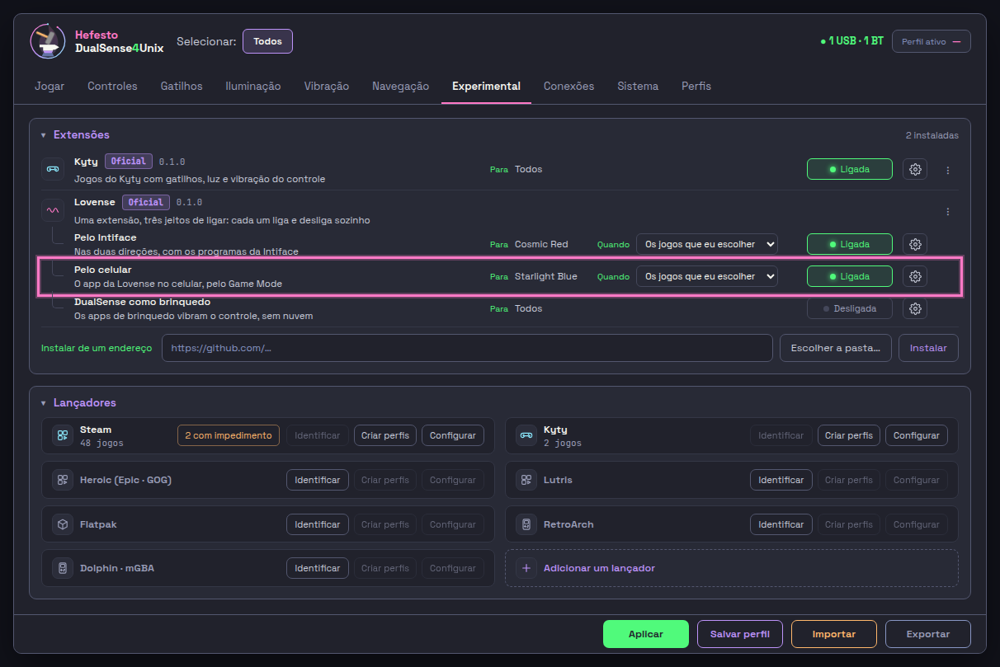
Depois
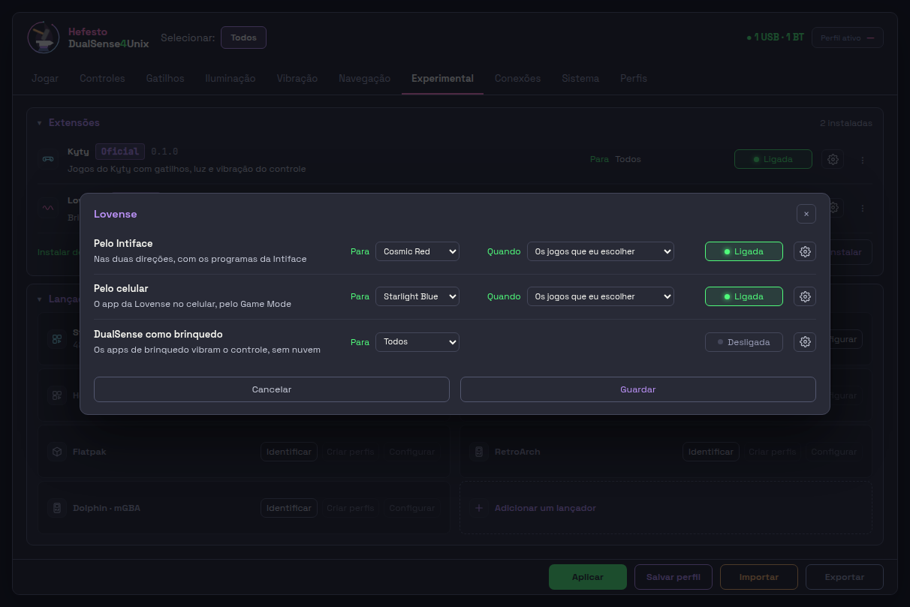
07-31 · «DualSense como brinquedo» vira a terceira forma da Lovense
O-HEFESTO-E-SERVIDOR-BUTTPLUG-DO-PROPRIO-DUALSENSE-01Você marcou «Ajustar» e não escreveu texto.
O que mudou. Você marcou para ajustar sem texto. Lido junto com a 07-30: o «DualSense como brinquedo» também saiu da lista e é a terceira forma dentro do diálogo da engrenagem da Lovense. Nasce desligado, com a chave do mesmo tamanho das outras (104 px), o Para e a engrenagem para a configuração completa. Se o que faltava era outra coisa, escreva abaixo.
Antes
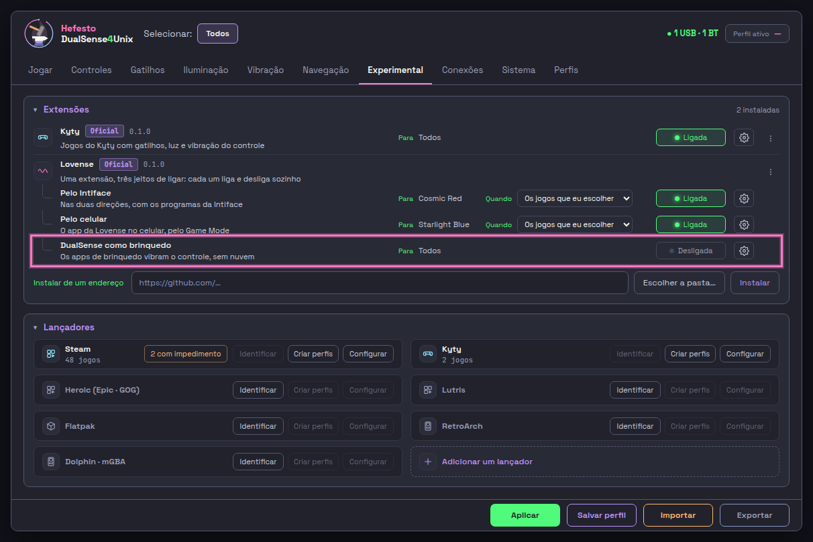
07-33 · O aviso laranja da Steam sai; os impedimentos ficam no Configurar
A-ABA-EXPERIMENTAL-DO-TODO-01«o lançadores o nome tá certo mas sem aquele aviso laranja ele sai.»
O que mudou. Saiu o aviso laranja «2 com impedimento» da linha da Steam, e o título «Lançadores» segue como está. Os impedimentos se veem no «Configurar» da Steam: o diálogo ganhou a linha «Impedimentos», com «Ver e resolver», que abre o diálogo deles. Os botões da linha seguem com a mesma largura (76 px).
Antes
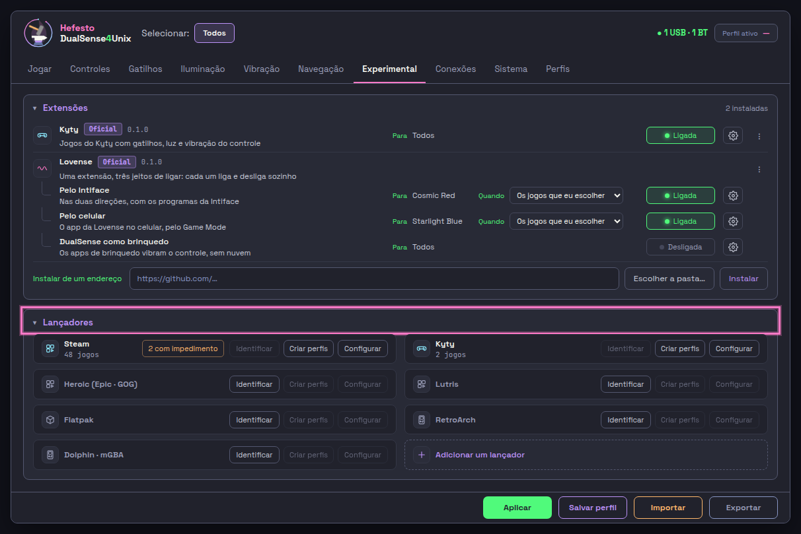
Depois

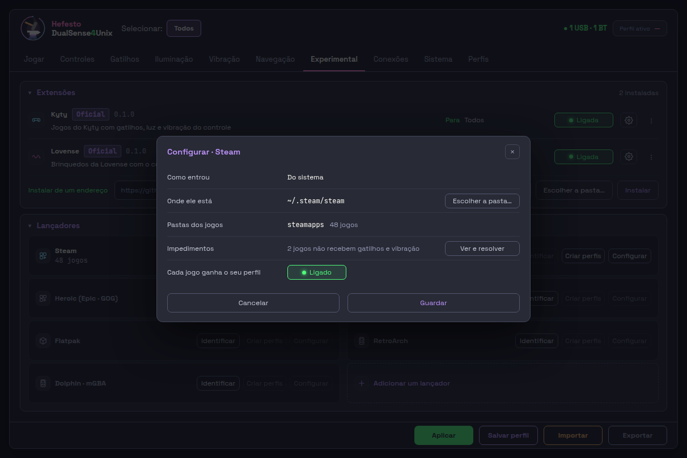
07-35 · A lista de extensões tem só duas linhas: Kyty e Lovense
A-ABA-LANCADORES-GANHA-AS-MODIFICACOES-01«são só duas extensões. uma linha pra cada, kity e lovense. o resto das configs vc clica e configura.»
O que mudou. A lista tem duas linhas, Kyty e Lovense, no mesmo formato. Saiu a linha «Exemplo da comunidade». O resto se configura clicando na engrenagem; o diálogo da Lovense cabe sem rolar nos três tamanhos (1212 x 809, 1212 x 740 e 1918 x 840).
Antes
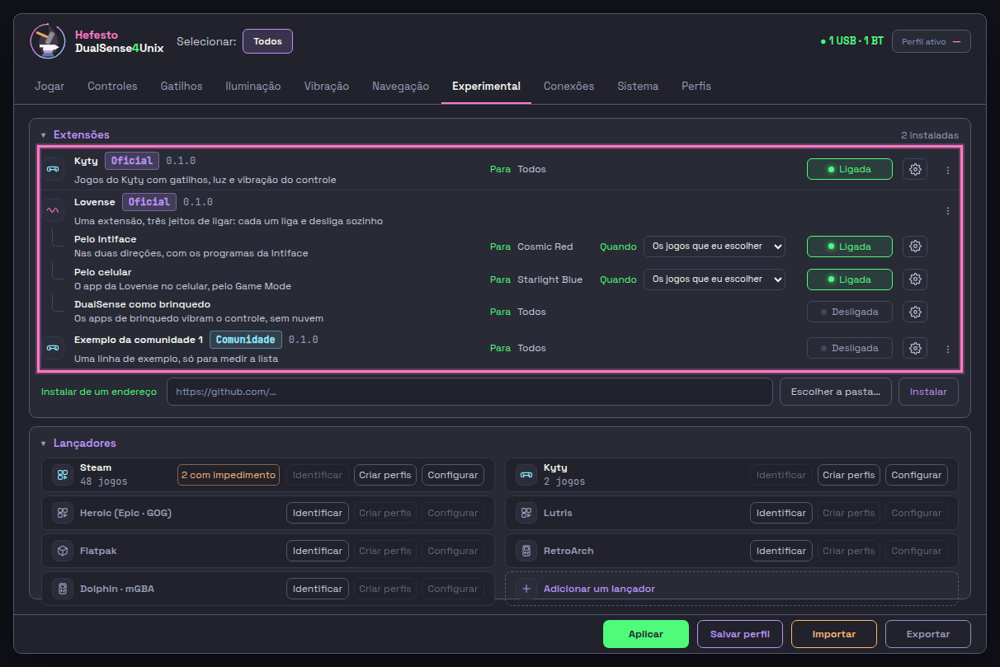
Depois
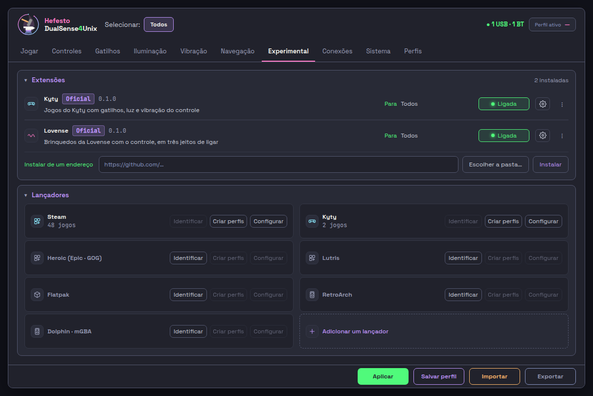